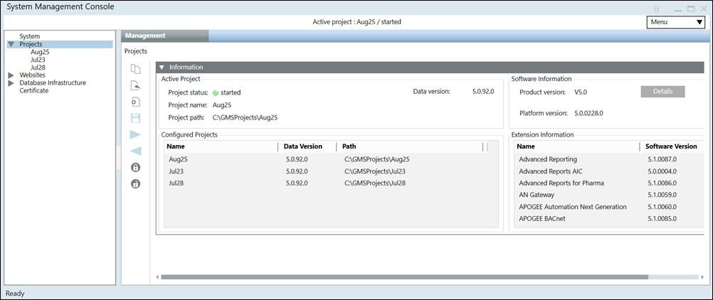
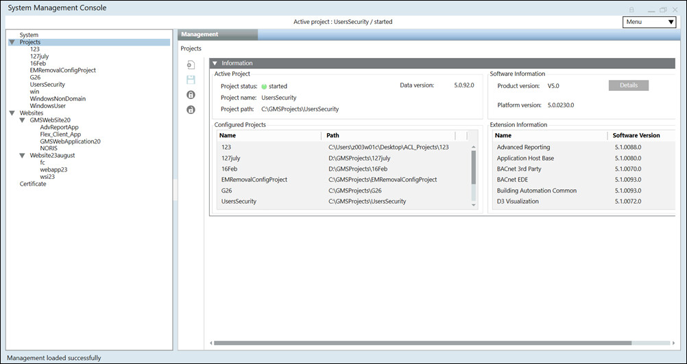

Management Tab on Server, Client/FEP
In SMC, when you select Projects in the SMC tree, it provides you with a quick summary of the currently active project in the Information expander. This includes the following:
- Active Project: Displays information about the active project, including the following:
- Project Status:
started, stopped, stopped - last repair failed(in red), stopped - repair on next start,and so on, along with the project status indicator. - Project name: Name of the active project.
- Project path: Location of the project on the disk.
- (Only on Server installation) Data Version: Project data version.
- Configured Projects: Displays the list of configured projects and their details, including the following:
- Name of the available project.
- (Only on Server installation) Data version of the project: Version of the project data as mentioned in the config file located at
[Installation drive:]\[Installation folder]\[project name]\config. - Path: Location of the available projects on the disk.
- Software Information: Displays information about the system including platform build version, product version and details of extensions that are installed. Additionally, it also displays information on any quality updates (QU) and patches.
- If platform build is installed with SR, it displays the Product version, the platform build version in Platform version.
- If QU build is installed, QU version displays in the Product version field; otherwise it is not displayed.
- Product version: Displays the installed version of Desigo CC and the version of the patch (if installed). For example, if quality update 1 (QU1) is installed on top of V5.0, the Product version displays as V5.0 QU1. In addition to SMC, the QU version also displays in the About page of the Installed Client, Windows App Client, and Flex Client.
Click Details to display information about the system including platform build version, product version, details of extensions, and information on the patch installation history fetched from the file Software Information.txt located at
[Installation drive:]\[Installation folder]\GMSMainProject.
The patch installation history displays only if the Updates_History.txt file is present at the following location, <installed drive>:\ProgramData\Siemens\GMS\InstallerFramework. - Platform version: Displays the version of the Desigo CC platform. For server installations, this information comes from the BuildInformation.ini file located at [Installation drive:]\[Installation folder]\GMSMainProject.
- Extension Information: Displays the list of installed extension and their versions. This information comes from the ExtensionModuleDependency.xml file located at [Installation drive:]\[Installation folder]\GMSMainProject\_Extensions.

